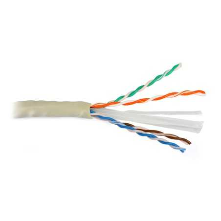

Il cavo Cat6
Il cavo Cat6 è un tipo di cavo di rete utilizzato per trasmettere segnali Ethernet ad alta velocità. La sigla "Cat" sta per "Categoria", e il numero "6" indica la versione del cavo secondo gli standard TIA/EIA-568. Il cavo Cat6 utilizza quattro coppie di fili in rame intrecciati e schermati come il cavo Cat5, ma ha una maggiore tolleranza al rumore e alle interferenze elettromagnetiche, grazie ad un'impedenza di 100 ohm. Il cavo Cat6 può trasmettere dati a velocità fino a 10 gigabit al secondo (Gbps), a differenza del cavo Cat5 che può trasmettere dati solo fino a 100 megabit al secondo (Mbps). Il cavo Cat6 è utilizzato comunemente per la connessione di dispositivi di rete ad alta velocità come computer, switch, router, modem, e altri dispositivi di rete.
